The Two Handed Backhand:¶
The Four Variations¶
John Yandell¶
I had always believed that the two-handed backhand was the simplest shot in tennis, like a left handed forehand, but without all the confusing differences in grips and finishes. I've spent a lot of time on the court teaching the stroke that way, and I've written about the mechanics in my book Visual Tennis, and also on TPA. (link.)
I say "had" always believed, because I no longer think that's the case. After extensive study of Advanced Tennis high speed footage of pro men and women, I think the two-hander is, in some ways, as complex as the forehand. The high speed footage shows there are 4 versions, each with different technical characteristics. I now think that understanding which version a player hits--or should hit--is an important key to developing the stroke at all levels.
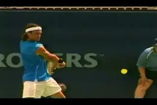
Is there one two-handed backhand--or are there four?
What Elements?
The differences in the 4 versions are in the position of the arms and hands--the most critical element in determining the position of the racket at contact. The hitting arms can both be straight. They can both be bent, either to a greater or lesser degree. Or the front arm can be bent and the rear arm can be straight.
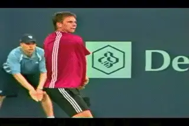
Can you recognnize the dominant arm combination in men's tennis?
In general, only one of the four versions is commonly taught, that is, the two-hander is similar to a left-handed forehand, and this approach may be limiting the development of many players. So I'm excited to be presenting a detailed technical description of the other versions here for the first time. In particular, the last version, with the front arm bent and the back arm straight, is important to understand. This is because it is the dominant version in men's pro tennis. So far as I am aware this is the first article is the first to identify it and describe it in detail.
Open Evolution
Emerging video data bases are transforming how tennis is understood and taught. I'm proud of the contributions we've made to developing them, both at Advanced Tennis and TPA. Players and coaches now have the ability to compare what they believe to what the top players actually do. The more you study them the more you learn about what actually happens
In the past, I've been known to question teaching beliefs that didn't seem to match video reality. So I don't want to make an exception for myself--in fact the opposite. You could take it as a threat to your credibility as a coach when video contradicts your beliefs. I don't look at it that way. The sport is too complex for anyone to claim they have the ultimate technical understanding, or anything close to it. I think we have to remain open and continue to evolve our thinking. This article tries to do this with the two-handed backhand. At the end, I am going to share some of my own positive experience using this new information about the two-hander on the teaching court.
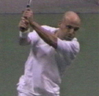
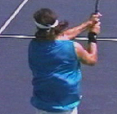
The problem is the hands and arms look so similar at the finish for all 4 versions.
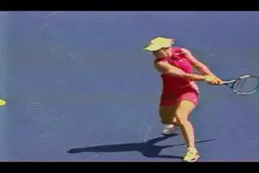
The finish position before the racket starts back and down.
In Detail
So what are the technical specifics of the 4 versions and what makes them distinct? The key is the position of the hands and arms around the contact. Although I had previously studied many pro players in 30 frame video, I was shocked when I studied some of the same players closely at 250 frames. I saw things I hadn't seen before, and initially, they didn't seem to make sense. But gradually I pieced together what was really happening around the contact. I saw the hands and arms could work together in different ways. This is how my understanding of the 4 variations emerged.
Previously, one of the things that had fooled me was the finishes of the top players all looked similar. Almost all two-handed players tended to reach a common position just before the start of the wrap. This is the last point before the motion of the racket starts backward and down. In this position, both arms are bent and the wrists are at about eye level. The position of the left arm is consistent with the biomechanics of a left-handed forehand.
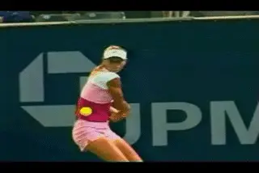
The left-handed forehand is the most common version in women's tennis.
But this finish position actually camouflages how players use their hands and arms in the critical few frames before and after contact. And that's the problem. It's a matter of a few high speed frames around the contact. So like many coaches looking at video, I tended to see what I was looking for--which was the way I taught the stroke.
Let's clarify one thing. It's not that the left-handed two-handed backhand doesn't exist. It definitely does. It's one of the 4 variations. It's also the dominant version in women's tennis. Although it's less common, players at the top of the men's game have used it as well. If you have learned that version, or teach that version, it's not that it is technically invalid. It's just that it is one of 4 possible versions. But that version may or may not be the best or most natural version for you--or the players you coach. This is true especially if you are male, because the majority of top men's players use a different combination.
It's also important to note that, not all of the top players use one variation on all shots at all times. Most players have a dominant version, but you'll see them slip into one of the others depending on the type of ball they are dealing with. Marat Safin, for example, seems to go back and forth between at least three different combinations at different times.
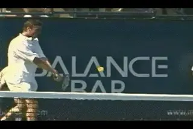
Safin can hit with his arms straight, or bent, or in between.
Grips
Interestingly, there seems to be a range of grips that will work with some of the variations, while others require more specific configurations. All the players shift the grip at least somewhat with the dominant hand, away from their forehand grip toward some version of a backhand grip. Some of them, like Moya or Hewitt, end up with a fairly strong backhand grip, with the knuckle of the bottom hand verging on the edge of the top bevel. Some have a mild eastern grip, with the index knuckle on bevel 2, like Agassi or Safin.
This is also true for most of the women. Typically they hold a mild eastern grip with the index knuckle on bevel one, for example, Clijsters, Davenport, and Sharapova. But others, like Venus and Serena, don't make it that far. Although they rotate their hand toward the top of the frame a significant distance away from their forehand grip, you couldn't really call the way they hold the racket with the bottom hand a backhand grip. It's at best a mild continental, or somewhere in between an old style eastern forehand and a continental. As I said, on some variations that seems to make more difference than others. In a future article, we'll see how a fundamental flaw in his grip structure limits Andy Roddick's backhand in this way because of the variation he chooses.
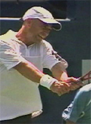
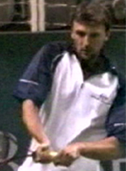
A more limited range of grips than the forehand: a continental or eastern grip with the bottom hand paired with an eastern or a mild semi-western with the top.
The players also hold a range of grips with their top arm, although the range is less extreme. You see Agassi with a classic eastern grip with his left hand, bordering on the edge of a continental. Others shift the left hand downward to a modern eastern, or even a mild semi-western.
Straight/Straight: Agassi
So what are the specfics of the 4 variations? The first version is "Straight/Straight," with both arms straight at contact. The best example is Andre Agassi. Although I have claimed in the past that Agassi was a great model for the left-handed forehand, the reality turns out to be something close to the opposite. Both of his arms straighten out before contact and stay straight well out into the followthrough. This is before they move to the finish position with arms relaxed and bent.
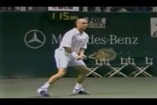
Straight arms before, during, and after contact.
Of the 4 variations, this one appears to have the most front arm contribution to the stroke. That is, it is hit the most like a one handed backhand. In fact if you look at Agassi it's not hard to imagine him just dropping the back arm off and hitting a fairly good flat one handed backhand drive. The Straight/Straight version is relatively unusual in pro tennis, although there have been other great players who used it, including Yevgeny Kafelnikov and Jim Courier. Marat Safin appears to usea slightly less extreme version on some balls.
Agassi uses what I would call a continental backhand grip with his index knuckle on the second bevel, and part of his heel pad on the top bevel. This is paired with a conservative grip with the left hand, on old style eastern forehand that is even verging on a very mild continental. This appears to be the same grip structure as Kafelnikov and Safin. Courier on the other hand hit it with a stronger one handed backhand grip, with his index knuckle closer to the top of the frame. He pairs this with a mild semi-western grip with the left arm. Although his arms were both straight at contact, this grip combination appears to push Courier's contact point further in front. Agassi and Kafelnikov on the other hand tend to make contact more to the side--although the contact is still clearly in front of the front leg in the netural or closed stance.
If we look at Agassi in the animations we can see that at the completion of the turn, his right arm is already straight. With his left arm, though, it's harder to tell. During most of the backswing, it's tucked in close to the torso, with the elbow bent or at least somewhat flexed. This can be confusing, because it looks like the hitting arm position associated with the left-handed forehand version.
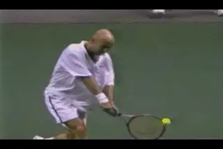
The rear arm straightens just before contact, with both arms straight well into the followthrough.
But watch what happens as Andre starts forward to the contact. The bend in the left arm disappears. In the last 10 frames before the contact, it's definitely completely straight. But this happens only about 1/20th of second before contact--too fast for the human eye to see.
As the forward swing starts, the right arm stays straight while the left arm straightens out. Together the arms form a triangle shape with the torso, and they maintain this as the racket moves to the contact. Look at the angle of the wrist of the right hand. It's similar to a onehander. This is different than all the other players who tilt the wrist down to the some extent. It's an indication of the role the front arm plays in the stroke.
The same triangle shape continues well out into the followthrough, for another 20 frames or so in the high speed footage. At that point, both elbows start to relax and bend. 10 frames later the arms are in the familiar finish position. So all the shifts and changes in the shape of the hitting arms--from bent to straight and back to bent again--takes place in about 40 high speed frames. That's around 1/6th of a second! No wonder it's impossible to pick clearly watching pro tennis in real time.
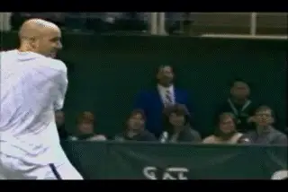
Agassi maintains the triangle shape on high balls.
Shoulders
Besides the straight arms, this variation has one other defining feature. This is the variation in the tilt of the shoulders at contact. With both arms straight, the shoulders can be level, but the front shoulder can also be higher, especially on lower balls. At contact, Agassi's front shoulder is higher on most balls waist level or lower. It's the same for Courier. Kafelnikov's shoulders are more level at contact, but he also dips his front shoulder further forward at the start of the foreswing. As we'll see, this is different than some of the other versions where the rear shoulder is higher.
This shoulder tilt is actually similar to what the top one-handers do on some balls, and another indicator of the role of the front arm in the stroke. But it's less a prescription for how to teach the shot, and more a way to recognize the variation a particular player may be hitting.
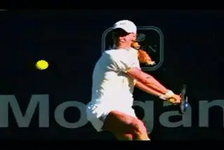
Dementieva and Ferrero hit with a Flex in both arms.
Interestingly, the straight arms version has some of the same advantages and limitations as the one hander. Like the one-handed topspin backhand, it is best suited for playing balls that aren't too high in the strike zone. So if you are Andre Agassi and you can stand up on the baseline and hit the ball on the rise, it works really well. That may be one reason why it's rare. Higher balls are more difficult, although we see Agassi deal with them amazingly well with the same hitting arm positions on balls as high as shoulder level.
Flex/Flex
The second version is the Flex/Flex. The Flex version is hit with some bend in both arms, but not as much as with the left-handed forehand version, as well see. There is a symmetry in the bend in the arms. The Flex is also relatively rare in pro tennis. You see Safin hit most of his backhands with this variation. You also see Juan Carlos Ferrero hit it on a significant number of balls this way. Elena Dementieva is probably the only top women's play who hits the Flex.
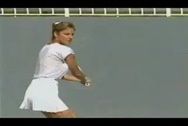
Chris Evert help start the modern trend to the two-hander hitting the Flex.
Like the bend in the arms, the shoulder position for the Flex is also balanced. If you look at the shoulders at contact, they are usually level, with the front and back shoulder at the same height. Again, this one way to spot the variation especially in comparison to the two versions below. Again if you look at the angle of the wrist, you can see it is close to inline with the forearm, similar to Agassi, or maybe a little weaker. Again, this is an indication of the role of the front arm.
Bent/Straight
The Bent/Straight version is hit with the right arm bent and the back arm straight at contact. This is the most common version of the two-hander in men's pro tennis. Lleyton Hewitt, David Nalbandian, and Carlos Moya, are great examples. Other top players we have filmed with this combination include Nicholas Kiefer, Robin Soderling and Thomas Johannson. Juan Carlos Ferrero also hits it at times, as does Marat Safin. The more top players we film, the more I suspect we'll see it, including probably Rafael Nadal. (Just a prediction, but we'll see.)
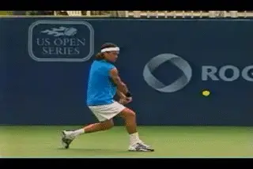
The front arm bent and rear arm straight--the most common version in men's tennis.
The Bent/Straight two-handed backhand is one of the unknown secrets in men's tennis. It's not identified in the coaching literature, few if any pros are teaching it, but all the top players use it. How could that be? It's similar to the left foot landing on the serve. For years it was never taught, or talked about in articles, books or magazines, but the top players all did it anyway. How? Feeling? Osmosis? It just goes to show the final arbiter of technique is always the players themselves, no matter the coaches may think or advocate.
Grips
Interestingly, the Bent/Straight version is usually hit with the strongest backhand grip. Fro most players, this appears to be a definite eastern backhand or even a strong eastern backhand, with the index knuckle on the edge between bevel 1 and bevel 2. But it's possible to hit with a milder grip as well. Marat Safin uses this variation at times, hitting with an eastern or strong continental grip, and some experts think he has the best two-hander in the game.
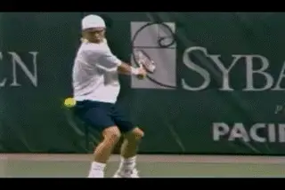
Straight arms in the backswing, but at contact, Bent/Straight.
Lleyton Hewitt is a good model of a player who hits almost all of this backhands with the straight back arm and a stronger grip. Let's see how he sets up the hitting arm position. As is the case with Agassi, what we see in the backswing can be deceiving. I have heard coaches argue that Hewitt hits with both arms straight. If you look at his take back it is easy to see why. At the completion of his shoulder turn, Hewitt definitely has both arms straight and pulled back relatively far behind him. We probably all have a mental image of him in this distinctive position.
But again the high speed footage shows this starts to change as the racket moves forward. About 20 frames before the hit the elbow of the right, front arm starts to flex. By the time the racket reaches contact, the right elbow is bent at something close to 90 degrees, and the forearm is almost parallel to the court. Meanwhile the back, left arm has stayed totally straight. It stays straight for about another 20 frames after contact. Then it starts to relax, and bend to reach the finish position we've described. Watch Moya do the same.
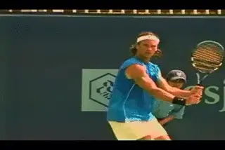
Moya: strong grip, bent right arm, straight left.
The stronger grip and the bent right elbow seem to affect the contact point in two ways. First the contact is slightly closer in to the body (to the player's right) compared to the Straight/Straight or the Flex/Flex. It is also probably slightly further in front, as it would be on a one-handed backhand hit with the same, stronger grip. Even though the front arm is bent at contact, I think this position is an indication that it is pulling the racket forward and taking a significant role in producing the shot. You can see that the angle of the wrist is at most tilted down only slightly from that of a one-hander hit with the same grip.
With this variation it also appears that the racket may also moves outward somewhat further along the line of the shot. This is consistent with stronger grip, but also the straight position of the back arm. You can feel this if you model the motion yourself. With the more extreme grip on the right hand, it's natural for the front arm to pull the racket outward through the line of the shot, and for the straight back arm to push in the same direction.
There is a significant difference however in the shoulders compared to the first two versions. Instead of hitting with the shoulders level, or the front shoulder slightly higher, this version is hit with the back shoulder higher at contact. This is an indication of the strong role of the back arm in driving the racket through the contact.
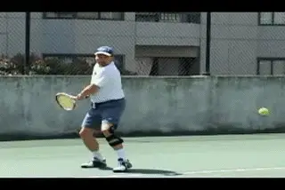
A straighter back arm meant more bang for Ed
Based on an amazing experience I had with one of my long term students, my belief now is that for most male players, and especially for adult club players, this version is the probably the way to go. Ed was a tough 4.5 men's player, about 45 years old, a lefty, with a solid all court game and a compact, accurate forehand. His two-handed backhand was a good shot, but probably his weaker side. We had worked long and hard on the left-handed forehand version of the shot and it looked good on video. But the ball never really had the same pop as his best forehands.
After my high speed research on the differing arm positions, I decided to experiment with Ed. We created a new model based on the straight arm positioning, and began working in controlled drill. Bang! Suddenly the zip on his ball went way up. For the first time he could clean the ball on both sides. I thought I'd seen everything that could possibly on the teaching court. But this was a new, undiscovered piece in the evolving puzzle of teaching the full range of strokes to players at all levels
I think understanding the Bent/Straight version could make a real difference in teaching juniors and also adults. So many adult males struggle with the two-hander. I now think this is because they often try to use the rear arm in the wrong way. Recently I was at a beautiful private club in South Florida and had the opportunity to observe one of the pros teaching a very avid adult male player. Mainly they were working on his two-handed backhand. The pro kept giving the student, who was in his 30s and pretty athletic, input on how to hit the left-handed two-hander (The pro himself hit with one hand.) The balls were going everywhere. After about 20 minutes, they were both obviously frustrated. The student said something like "This just isn't happening!" Then the pro got defensive and accused him of not doing what he wanted, and started showing him the left-handed motion over and over like it was a chapter from the Bible. The lesson finally settled into a grudging truce didn't seem very positive for either one.
What I wanted to do was grab my video camera, run down there and film the guy and then experiment with the Bent/Straight variation I'd discovered. I would've bet 100 bucks he could have transformed the shot. That kind of situation repeats itself thousands of times all over the country and around the world, and I think that's tough. It's tough for tennis, because despite the best efforts and intentions of hard working players and coaches, real improvement proves difficult and elusive. The game is just too difficult and technically demanding to be taught without using video analysis. Inch by inch, we're going in that direction.
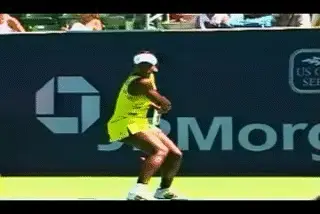
Serena's back hitting arm position is nearly identical to an eastern forehand.
Bent/Bent
Which brings us to where we started--the left handed backhand version, hit with both arms bent. The hitting arm position for the back arm is almost identical to the hitting arm position on the forehand. This version is the predominant version in women's professional tennis. Maria Sharapova, Kim Clijsters, Lindsay Davenport, and Serena Williams all hit this version. So does Venus Williams, with a variation we'll address later.
But there have been top men who used it as well. Goran Ivanisevic is the most obvious example. I've heard it argued that his backhand wasn't that great. That misses the point. He did win Wimbledon and also played at the highest levels on hardcourts for 10 years, so his backhand couldn't have been that bad. The point is that for whatever reason, this variation was natural for him. It's doubtful that changing the balance in the hitting arms would have magically led to a title at the French.
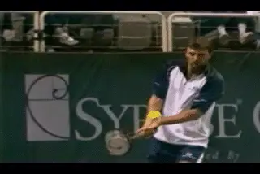
Goran: a Grand Slam champ who used the back arm.
I have written in the past that this version relies on the rear hand, so it probably requires that a player be somewhat ambidextrous in order to really master it and have become automatic. My experience has been that many adult males struggle with the left-handed version. For whatever reason, it worked for Goran--who knows, maybe someone tried to make him into a righty when he was young. In any case, it goes to show that the use of the hands depends on the player. It's still going to be a matter of individual preference, comfort, and results.
Grip
The left handed forehand version is still hit, in most cases, using some version of a backhand grip with the right hand. Lindsay, Sharapova and Clijsters all appear to have a mild eastern backhand grip.. Ivanisevic is a little stronger than that, with his index knuckle verging on the edge of the top of the frame. For these players, the backhand grip with the bottom hand is then paired with a some version of an eastern or very mild semi-western grip with the top left hand. But look at the angle of the wrist at contact. The angle is always tilted down on this variation. That's an indication of the reduced role of the front arm. If you don't believe me, just try hitting a one-hander with the wrist in that position.
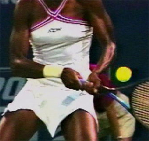
Venus has a weaker right hand grip--and a space between her hands.For some players, however, the grip shift with the bottom hand appears weaker. Serena and Venus Williams, for example. Serena seems slightly less on top with her bottom hand than the players mentioned above. For Venus the shift is less still. It's something less than even a continental. Her index knuckle is on bevel 1, but her heel pad doesn't appear to crack the edge of the top bevel. It actually is probably closer to an old style eastern forehand. Her left hand grip is also little more underneath than the other players, and if you look closely you can also see that there is a small gap between her hands on the racket.
Venus's backhand is her best shot, especially down the line, and is hit primarily with an open stance. Her grips help explain why. Her backhand is the most left-handed of any player we've filmed, man or women, with the least amount of energy coming from the front arm.
The Hitting Arm
For all these players, the key element to understand is the left hitting arm position with the elbow bent and the wrist laid back. It's basically analogous to the dominant hitting arm position on the forehand. The wrist stays laid back at the set up, the start of the forward swing, at contact, and at the finish position. The elbow stays bent as well. At the start of the article, we identified this position as a commonality across the various two-handed versions. But if we look a little closer we can see that with the Bent/Bent or left-handed forehand version, the left elbow tends to be a little more bent that with the other variations.
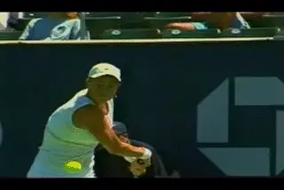
Watch the back left arm drive the shot with the elbow bent and the wrist laid back.
So Which One?
So if there are four versions, the obvious question is: how do you decide which one is right for you? Try this test. Using a ball machine, or an easy feed from the pro, experiment with hitting a one-handed backhand. Then do the same with a left handed forehand. For both tests, start in the turn position with your shoulders sideways and the racket already back. Set up the hitting arm. For the one-hander that means keeping the right hitting arm as straight as possible. For the left handed forehand, this means elbow bent, wrist laid back. Don't try to hit hard, just concentrate on the form. It's OK to hit a looping, semi-moon ball--just feel what the motion is like. Hit a few dozen balls one way, then the other. Go back and forth and see which feels more natural.
I've seen this drill yield amazing results. I tried it recently with a player in the top 150 in the world. His backhand was his weaker side, and when we videoed him it was clear he was hitting the left-handed forehand version, similar to Ivanisevic. But when we did the test, we found he could just drill a one-handed topspin backhand. His left-handed forehand was nowhere near the same level. This was a clear indication that he needed to change the balance in the way he used his hands and arms. He was able to do this as part of his overall training that took him 50 places higher in the rankings.
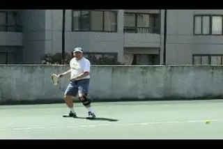
Test the one hand backhand and opposite arm forehand.
If you have a similar experience and find you can hit a decent one-handed drive, this is an indication that you are probably better suited to developing the Hewitt or even the Agassi version. If the one-handed backhand feels hopeless and/or the left-handed forehand is a lot stronger, then you should probably try that version at least initially.
But this drill is just a place to start. You don't have to make a final decision, after doing it. Make your best guess, work on the key positions, then see what happens. As you progress, video the stroke and take a close look at the arms over a few dozen balls. This is the only way to see for certain which version of the hitting arms a player is really favoring. Sometimes you start with one version and over time it naturally morphs into another. If this happens and the stroke seems to be working, adjust you model to what the video says you are actually doing.
Whatever version you end up with, go back and do the same drill from time to time and practice hitting individually with the each hand. This helps players feel that it's two-handed shot no matter what, and that you still want to use both arms to some extent in all versions. I've had a lot of success doing this with lower level junior players, especially girls. Even if they hit the left-handed forehand version, it helps them get the front arm into the shot. This is why, even in this version, it's important to have at least a mild backhand grip with the bottom hand.
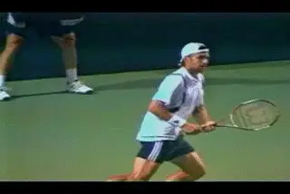
Experiment to find which version is right for you.
So it's important to understand the hitting arm positions in learning and teaching the two hander. But my investigation also led to understanding of one more element in the arm action on the two hander. This is the hand and arm rotation. Ever wonder what was happening when the players seem to dip their wrists and the racket head way below the ball as they start forward? Turns out it's a somewhat different version of the arm rotation we saw on the forehand. We'll explore that in a future article, as well as the missing elements in Andy Roddicks' two-hander. Stay tuned!

John Yandell is widely acknowledged as one of the leading videographers and students of the modern game of professional tennis. His high speed filming for Advanced Tennis and TPA have provided new visual resources that have changed the way the game is studied and understood by both players and coaches. He has done personal video analysis for hundreds of high level competitive players, including Justine Henin-Hardenne, Taylor Dent and John McEnroe, among others.
In addition to his role as Editor of TPA he is the author of the critically acclaimed book Visual Tennis. The John Yandell Tennis School is located in San Francisco, California.
← The Forward Swing | Advanced Tennis Index | The Pro Slice and Your Slice →